🧪
Experiment
Try applications, activities, room setups, and teaching approaches.

The XR Lab is a pilot program exploring how virtual and mixed reality can support learning, engagement, and durable skills across the college.

We use accessible and often free XR experiences, try them with students and faculty, and learn where immersive technology genuinely adds value.
Try applications, activities, room setups, and teaching approaches.
Help instructors find experiences that fit their learning goals.
Offer classes and open lab time so the equipment stays in people’s hands.
Not random — deliberate. Not every app or idea works, and that is useful information. The lab improves by testing, observing, gathering feedback, and adjusting.
Choose an experience or teaching idea worth exploring.
See how students and faculty actually use it.
Identify what worked, what failed, and what created value.
Refine the process, keep the useful pieces, and try again.
Accompanies reading the diary — shows the living conditions the Frank family experienced while in hiding.
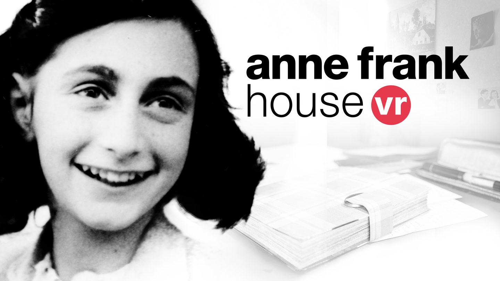
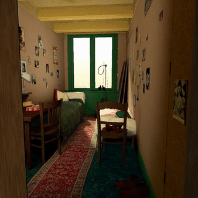
Helps students build empathy through real accounts of Black travel experiences in America.
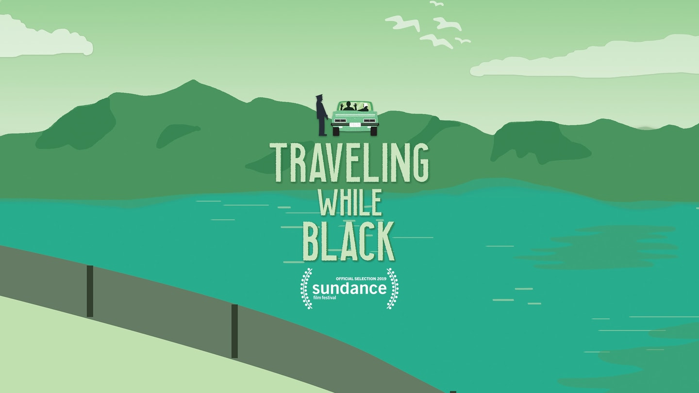
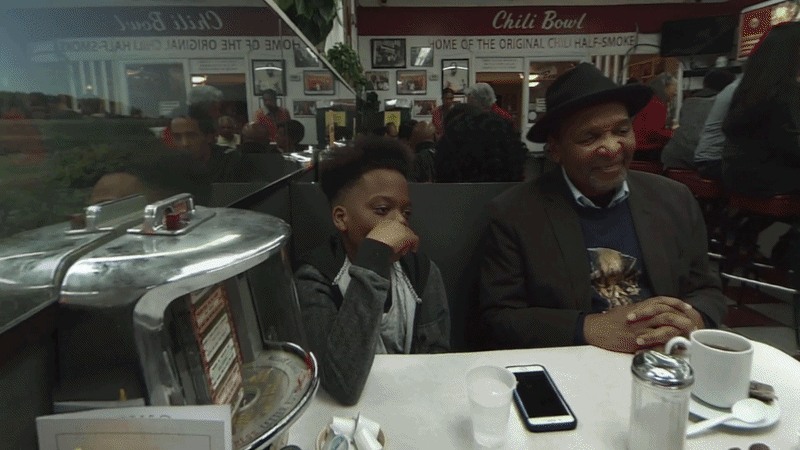
Compares land-use change worldwide — a forest turned to concrete, a trash mountain in India, dense development next to open land just a turn away.
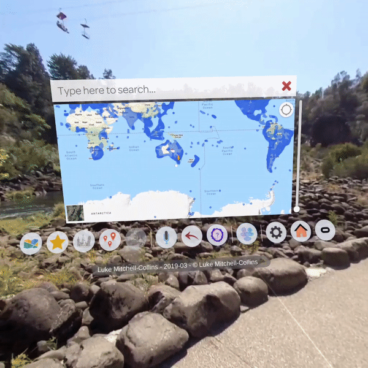
Shows what it's like to be a scientist in Antarctica, tracking and learning about the penguin lifecycle.
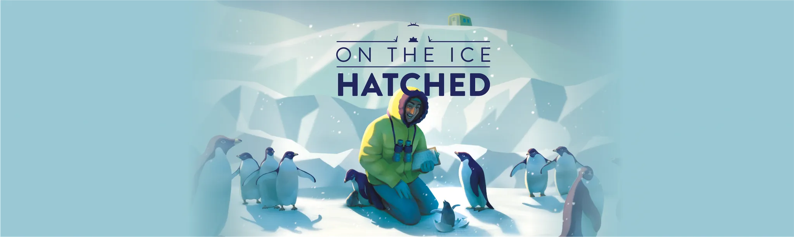
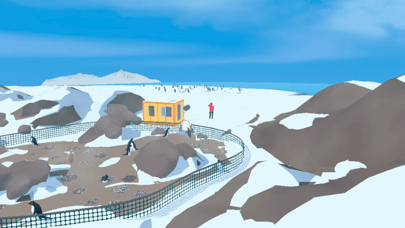
Students build portfolio pieces in VR, which viewers can then walk through or view at full scale.
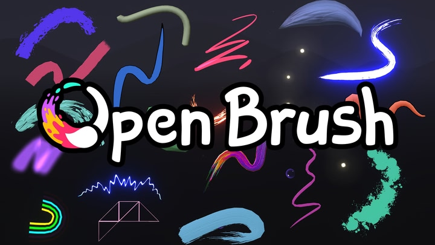
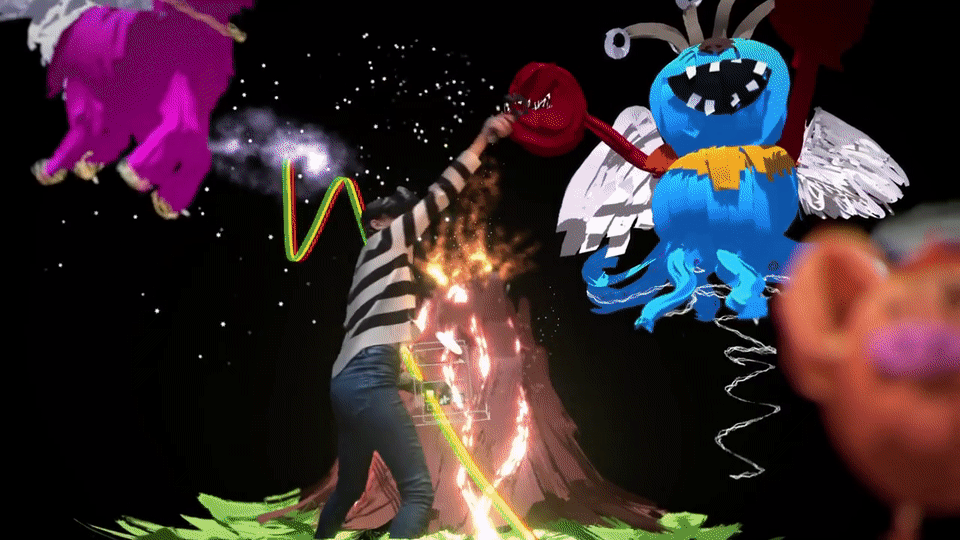
Free 360° videos viewed through a headset — a low-cost way to explore places and events.
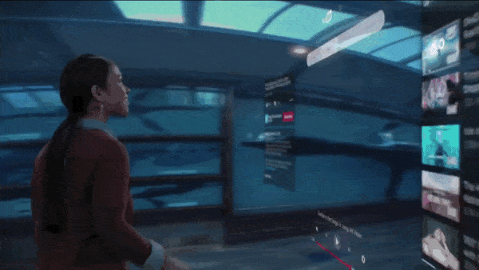
Lets students explore a full 3D human body layer by layer — muscular, skeletal, and organ systems — no cadaver lab required.
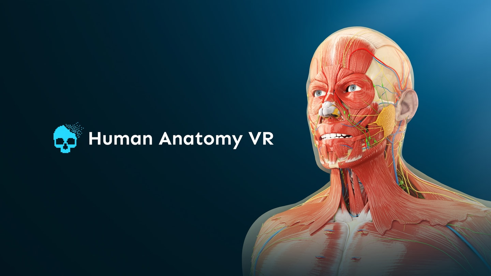

The technology will change. So will how we teach, how students learn, and the subject matter itself. These human skills stay useful through all of it.
We ask, and we listen — the good and the hard-to-hear. Both shape what we try next.
Learning about medical training and playing around with medical equipment.
I liked how nice the staff was.
How easy it was to get into the experience.
This place is secluded — a lot of students don't know about it. Advertise more.
It was good — more games would be nice.
The lab should be open more.
Open the lab on Mondays.
From our lab visitor survey.
Each department uses XR differently. The lab helps connect the technology to the actual goal of the course rather than forcing every class into the same shiny headset-shaped box.